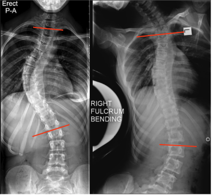

Adapted from: Gaillard F, Scoliosis. Case study, Radiopaedia.org (Accessed on 28 Dec 2025) https://doi.org/10.53347/rID-49513
1) Description of Measurement
Traction and push-prone (fulcrum bending) films assess passive coronal plane flexibility of scoliotic curves by measuring the residual Cobb angle under externally applied corrective forces.
Unlike active side-bending films, these techniques minimize patient effort and better reflect the true mechanical stiffness of the curve, making them particularly useful for operative planning, implant selection, and prediction of postoperative correction.
2) Instructions to Measure
3) Normal vs. Pathologic Ranges
Key points:
4) Important References
Pluemvitayaporn T, Jackkaew W, Surapuchong S, et al. A comparative study of curve flexibility assessment in supine traction, push-prone and push-prone traction radiographs in adolescent idiopathic scoliosis. Spine Deform. 2025 May;13(3):753-763. doi: 10.1007/s43390-025-01051-w.
Cheung WY, Lenke LG, Luk KD. Prediction of scoliosis correction with thoracic segmental pedicle screw constructs using fulcrum bending radiographs. Spine (Phila Pa 1976). 2010 Mar 1;35(5):557-61. doi: 10.1097/BRS.0b013e3181b9cfa9.
Liu RW, Teng AL, Armstrong DG, et al. Comparison of supine bending, push-prone, and traction under general anesthesia radiographs in predicting curve flexibility and postoperative correction in adolescent idiopathic scoliosis. Spine (Phila Pa 1976). 2010 Feb 15;35(4):416-22. doi: 10.1097/BRS.0b013e3181b3564a.
5) Other info....
Traction and push-prone films are particularly useful in:
Should be interpreted in conjunction with:
Residual Cobb angle on traction/fulcrum films often provides the best estimate of achievable surgical correction and guides: